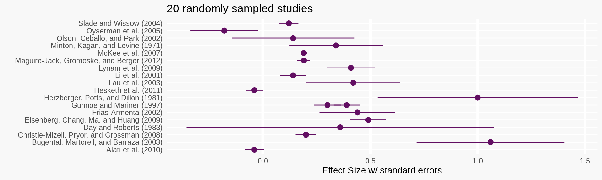
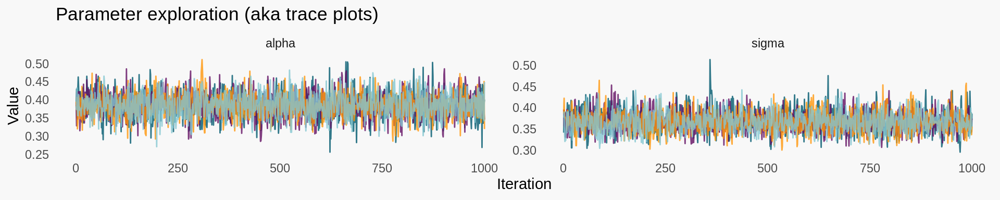
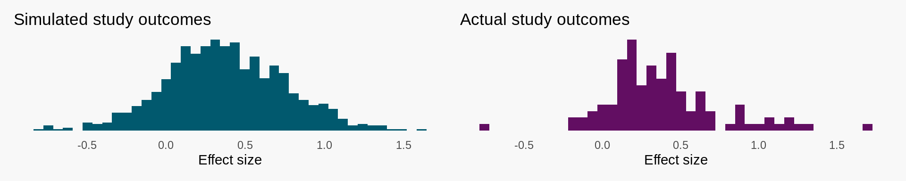
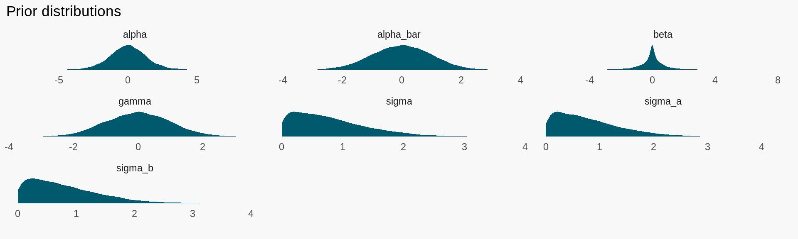
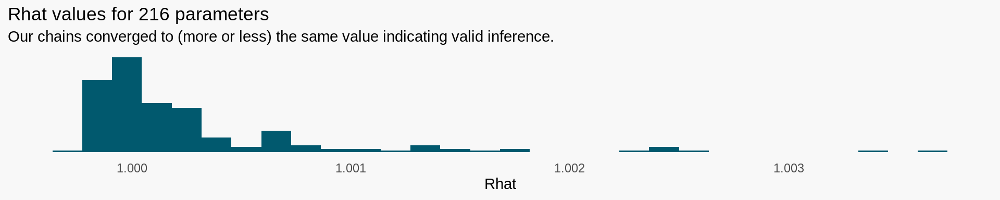
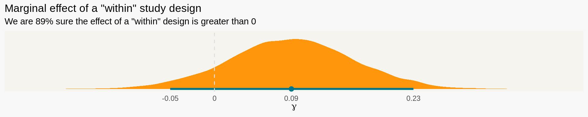

One of my favorite things about being a data scientist is running experiments. Often, data science teams will run a lot of repeated and related experiments about the same general thing - Usually, because we only have some short window to learn something or some other constraints. We run experiments to recover an effect size for something we care about. When the experiment is over, we have typically measured an effect size with some uncertainty (like a standard error) about this measurement. The data and results repeated experiments generate are probably applicable to each other, but how do we take advantage of that?
When you repeat studies, there are three ways of looking at it. 1. Each of the studies are perfectly identical to each other. 2. The studies are so different that the results of any one study provide no information about the results of any other. 3. There is exchangeability between studies though we don’t know exactly how much.
This third possibility takes the middle road between 1 and 2 and is the pragmatic approach that we’ll talk about in this blog post. We’ll use Bayesian hierarchical regressions to perform a meta analysis on a group of studies to determine what the true underlying effect was that those studies were trying to measure.
Preliminaries
This post is targeted at folks who already have an understanding of bayesian statistics. Throughout, I’ll use Stan as my primary modeling tool. There is a lot you can do to make your Stan code more efficient but this post shoots for interpretability. To learn more about Bayesian Statistics and Stan, I highly recommend Richard’s book Statistical Rethinking and the wonderful documentation on the Stan website.
# Interface with Stan
library(rstan)
# Helpers for working with Stan
library(tidybayes)
# Stan options
options(mc.cores = parallel::detectCores())
rstan_options(auto_write = TRUE)I use R and the tidyverse to wrangle data and dispatch analyses to Stan. I think it’s excellent for data wrangling and statistics. You can learn more about the tidyverse through Hadley Wikham’s free online book R4DS. By the way, Stan is an external library that works just fine with Python too… Feel free to use whatever you’re most comfortable with.
# Tidyverse for wrangling and plotting
library(tidyverse)
# Patchwork stitches plots together
library(patchwork)
# My plot theme
theme_minimal() %+replace%
theme(panel.grid.major = element_blank(),
panel.grid.minor = element_blank(),
plot.background = element_rect(color = "transparent", fill = "#F8F8F8")) %>%
theme_set()Our data set
Our goal is to examine a group of related studies and stitch their learning and uncertainty together in to one understanding about an underlying effect size. We’ll take a look at a dataset transcribed from Gershoff and Grogan-Kaylor’s (2016) that consists of several other studies trying to measure the effect of various parenting techniques on several developmental outcomes.
url <- "https://raw.githubusercontent.com/RishiSadhir/embracing_uncertainty/master/spank.csv"
spank <- readr::read_csv(url) %>%
mutate(se = (ul - ll) / 3.92) %>%
rename(effect_size = d)## Parsed with column specification:
## cols(
## study = col_character(),
## year = col_double(),
## outcome = col_character(),
## between = col_double(),
## within = col_double(),
## d = col_double(),
## ll = col_double(),
## ul = col_double()
## )head(spank)## # A tibble: 6 x 9
## study year outcome between within effect_size ll ul se
## <chr> <dbl> <chr> <dbl> <dbl> <dbl> <dbl> <dbl> <dbl>
## 1 Bean and Rober… 1981 Immediate … 1 0 -0.74 -1.76 0.28 0.520
## 2 Day and Robert… 1983 Immediate … 1 0 0.36 -1.04 1.77 0.717
## 3 Minton, Kagan,… 1971 Immediate … 0 1 0.34 -0.09 0.76 0.217
## 4 Roberts (1988) 1988 Immediate … 1 0 -0.08 -1.01 0.84 0.472
## 5 Roberts and Po… 1990 Immediate … 1 0 0.1 -0.82 1.03 0.472
## 6 Burton, Maccob… 1961 Low moral … 0 1 0.63 0.16 1.1 0.240In the dataset above, we have one row per {study, outcome}. The 76 papers they based their meta-analysis on contained both between-participant and within-participant designs which we have encoded above as the single dummy variable, within. Our outcome variable is effect size which is a normalized measurement of developmental outcomes. Finally, se describes the margin of error with which the study measured its effect size.
| Variable | Definition |
|---|---|
| study | Name of the study |
| outcome | Developmental outcome that was studied |
| within | Did the study use a within-participant design? |
| effect_size | Normalized effect size. |
| se | Standard error of the effect size. |
spank %>%
sample_n(20) %>%
ggplot(aes(x = study, y = effect_size,
ymin = effect_size - se,
ymax = effect_size + se)) +
geom_point(color = "#620E62") + geom_pointrange(color = "#620E62") +
coord_flip() + ylab("Effect Size w/ standard errors") + xlab("") +
ggtitle("20 randomly sampled studies") +
theme(axis.ticks.y = element_blank(),
panel.grid.major.x = element_line(color = "white", size = 1.5),
panel.grid.major.y = element_line(color = "white", size = .5))
A simple model
To orient ourselves to a bayesian workflow, let’s start with a naive way to approach this problem - by ignoring the measurement error and clusters in our data. We are interested in the true average effect size across all studies. We assume this average effect is normal and fit a single intercept across our data points: this is a naive fully pooled model.
\[\begin{align} effect_{obs} &\sim Normal(\mu_i, \sigma) &\text{[Effect is normally distributed]} \\ \mu_i &= \alpha &\text{[Intercept only model]} \\ \alpha &\sim Normal(0, 1) &\text{[Prior for mean]} \\ \sigma &\sim HalfCauchy(0, 1) &\text{[Prior for standard deviation]} \\ \end{align}\]
If you aren’t familiar with Bayesian model notation, this is similar to the following intercept only linear regression.
\[\begin{align} y = \alpha + \epsilon \ \text{ where } \epsilon \sim Normal(0, \sigma) \end{align}\]
A big difference is the last two lines which are known as priors. These are meant to encode prior information we may have about the problem in to the model. You can do some pretty cool things with priors, but in this post I just use them to represent the range of plausible values we think our parameters can take. If we run our model correctly, in the model specification above should be equal to a simple average of the effect_size column.
spank %>%
pull(effect_size) %>%
mean %>%
round(3)## [1] 0.385To run the model we encode it in stan, a probabilistic programming language. The first data section tells stan what data we are going to pass to it from R or any other programming language. The second parameters section tells stan about the parameter space it should be exploring. The final model section tells stan how to evaluate the likelihood of a particular set of parameter values. The program below is compiled to C++ and is linked to stan’s Hamiltonian markov chain monte carlo engine, which completes the actual parameter exploration.
// Data we will pass to stan
data{
// Number of observations
int N;
// Outome variable
vector[N] effect_size;
}
// Parameters stan should explore
parameters{
real alpha;
real<lower=0> sigma;
}
// The block below is used to calculate the
// log likelihood of any given parameter
// This section is best read bottom->top
model{
// 4. declare a vector to store
// the calculated mean
vector[N] mu;
// 3. We use benign prior for alpha
// and sigma
alpha ~ normal(0, 1);
sigma ~ cauchy(0, 1);
// 2. The mean of the effect_size
// Is calculated for the entire data set below
for (i in 1:N) {
mu[i] = alpha;
}
// 1. We believe our outcome variable is
// normally distributed when conditioning its
// mean on observables
effect_size ~ normal(mu, sigma);
}Now that our model is compiled and linked to stan, we set up our dataset and begin the parameter exploration. Stan explores the parameter space proportional to the likelihood of a given set of parameters. This means the samples we pull from during exploration approximate the full joint probability distribution of \(P(parameters | data, priors)\) which we call the posterior distribution. After sampling, stan prints out a summary of what it learned about each parameter. We can see that that our parameter does indeed line up nicely with the simple average we calculated earlier, 0.385. This should convince you that we used reasonable priors in our model.
# Its actually easier to pass lists to
# STAN instead of dataframes as you can pass
# in single element variables this way.
dlist <- list(
N = nrow(spank),
effect_size = spank$effect_size)
# Begin sampling. We specify 4 independent chains.
fit_meta_pooled <- sampling(stan_meta_pooled,
data = dlist,
refresh = 0, cores = 4, chains = 4)
# Print a summary of the results
fit_meta_pooled## Inference for Stan model: ae0e5ddc7b1ceb61353685618b06bb9f.
## 4 chains, each with iter=2000; warmup=1000; thin=1;
## post-warmup draws per chain=1000, total post-warmup draws=4000.
##
## mean se_mean sd 2.5% 25% 50% 75% 97.5% n_eff Rhat
## alpha 0.39 0.00 0.03 0.32 0.36 0.39 0.41 0.45 3222 1
## sigma 0.37 0.00 0.03 0.32 0.35 0.37 0.38 0.42 3202 1
## lp__ 55.02 0.02 0.98 52.45 54.65 55.33 55.71 55.98 1794 1
##
## Samples were drawn using NUTS(diag_e) at Fri Feb 28 22:13:16 2020.
## For each parameter, n_eff is a crude measure of effective sample size,
## and Rhat is the potential scale reduction factor on split chains (at
## convergence, Rhat=1).The really cool thing about stan and MCMC is that it doesn’t just return us the “optimal” or “best fitting” parameters. Instead it returns a list of samples from the posterior distribution. We can show these posterior samples directly in the plots below. They show how stan explored the parameter space as each movement is a sample drawn during stan’s exploration. The tidybayes package contains a bunch of useful tools for working with the results of Bayesian models and is what I use below.
# Bring draws from the posterior in to memory for alpha and sigma
post <- gather_draws(fit_meta_pooled, alpha, sigma)
# Print each sequential draw
post %>%
ggplot(aes(x = .iteration, y = .value, color = factor(.chain))) +
geom_line(alpha = .8) +
theme(legend.position = "none") +
facet_wrap(~ .variable, scales = "free") +
scale_color_manual(values = c("#01596E", "#620E62", "#FF960B", "#84C6D1")) +
ggtitle("Parameter exploration (aka trace plots)") +
xlab("Iteration") + ylab("Value")
I told stan to explore the space using 4 independent processes that ran in parallel. That is why you see four different colors stacked on top of one another. The exploration shown in the plots above can be stacked on top of one another to form the plots below. These samples allow us to ask very direct questions such as:
What is the most likely value this parameter takes?
In what region are we 95% sure that this parameter's true value actually lives is?
We now code up a helper function to help us answer those questions.#' posterior_density
#'
#' @param vec Numeric vector of a single parameter's posterior draws
#' @param title Title of the final plot
#' @param xlab X-label of the final plot
#' @param p Significance of the highest density interval
#' @param sig Number of sig figs to show in the graph
#' @param include_zero Include a marker for 0?
#'
#' @return a ggplot object
#' @export
posterior_density <- function(vec, title=NULL, xlab = NULL,
p = .05, sig = 4, include_zero = TRUE) {
credible_values <- c(hdi(vec, .width = 1 - p), mean(vec))
if (include_zero) credible_values <- c(credible_values, 0)
plt <- ggplot(enframe(vec), aes(value, 0)) +
geom_halfeyeh(fill = "#FF960B", color = "#01768B",
.width = 1-p, point_interval = mean_hdi) +
scale_y_continuous(NULL, breaks = NULL) +
theme(panel.background = element_rect(color = "transparent", fill = "#F6F4EE")) +
scale_x_continuous(breaks = credible_values,
labels = round(credible_values, sig))
if (include_zero) {
plt <- plt + geom_vline(xintercept = 0, linetype = 2, color = "#DEDEDE")
}
# Labels
if(is_null(title)) title <- "Posterior density"
if(is_null(xlab)) xlab <- "posterior value"
plt + ggtitle(title) + xlab(xlab)
}Now that we have our function, let’s use it to plot our results! An advantage of doing it via Bayesian inference is that we get nice measures of uncertainty around both the first and second moment of our effect sizes.
post <- spread_draws(fit_meta_pooled, alpha, sigma)
p1 <- posterior_density(post$alpha,
"Posterior treatment effect mean", expression(alpha),
include_zero = FALSE)
p2 <- posterior_density(post$sigma,
"Posterior treatment effect sd",
expression(sigma), include_zero = FALSE)
p1 + p2The graphs above tells us that we are 95% sure the mean and standard deviation of our meta-treatment effect lives in [.31, .45] and [.32, .42] respectively. Of course, 95% percent is a totally arbitrary cutoff but one that many of us are used to by convention. One really cool thing about having a complete description of uncertainty is that we can use it to run the model “backwards” and simulate new studies.
# Code to simulate a single study
sim_study <- function() {
idx <- sample(1:nrow(post), 1)
rnorm(1, post[[idx, 4]], post[[idx, 5]])
}
# Simulate it 1000 times
simulated_studies <- tibble(
effect_size = map_dbl(1:1000, ~sim_study()))
# plot the simulations
p1 <- ggplot(simulated_studies, aes(effect_size)) +
geom_histogram(fill = "#01596E", bins = 40) +
xlab("Effect size") + ylab("Count") +
ggtitle("Simulated study outcomes") +
scale_y_continuous(NULL, breaks = NULL) +
scale_x_continuous("Effect size",
breaks = seq(from = -1, to = 1.5, by = .5))
# Plot the actuals
p2 <- ggplot(spank, aes(effect_size)) +
geom_histogram(fill = "#620E62", bins = 40) +
xlab("Effect size") + ylab("Count") +
ggtitle("Actual study outcomes") +
scale_y_continuous(NULL, breaks = NULL) +
scale_x_continuous("Effect size",
breaks = seq(from = -1, to = 1.5, by = .5))
p1 + p2
A better model
When you think more deeply about the problem, you can see that the effect size we observe is a function of the underlying true effect size as well as the measurement error that accompanies each measurement. Also, if you carefully examine the data you’ll notice that there are multiple observations for some studies. This is because a given study can examine multiple developmental outcomes. Additionally, some studies used a between-participant design and others a within-participant design.
p1 <- spank %>%
group_by(study) %>%
tally() %>%
arrange(desc(n)) %>% head(10) %>%
ggplot(aes(fct_reorder(study, n), n)) +
geom_bar(stat = "identity", fill = "#01596E", colour = "transparent") +
coord_flip() + ylab("# Outcomes in study") + xlab("") +
theme(axis.ticks.y = element_blank()) +
ggtitle("Several studies used multiple \noutcomes")
p2 <- spank %>%
mutate(within = ifelse(within == 1, "within", "between")) %>%
ggplot(aes(within)) +
geom_histogram(stat = "count", fill = "#01596E", colour = "transparent") +
xlab("") + ylab("") + ggtitle("1/3 of studies used between-\nparticipants designs")## Warning: Ignoring unknown parameters: binwidth, bins, padp1 + p2Visually, this is how we can think about the data generating process.
The beautiful thing about Bayesian statistics is that we don’t need to be clever about this problem—we can just state the obvious and let Bayes’ theorem do the rest. We translate the graph above in to the following model.
\[\begin{align} effect_{obs, i} &\sim Normal(effect_{true, i}, effect_{se, i}) &\text{Observed effect as a function of true effect and observed se}\\ effect_{true, i} &\sim Normal(\mu_i, \sigma) &\text{Unobserved true effect}\\ \mu_i &= \alpha_{study[i]} + \beta_{outcome[i]} + \gamma_{design[i]} &\text{Mean of true effect - functional form}\\ \alpha_{study} &\sim Normal(\bar{\alpha}, \sigma_{\alpha}) &\text{Pooling information across studies}\\ \bar{\alpha} &\sim Normal(0, 1) &\text{Prior for grand mean}\\ \sigma_{\alpha} &\sim Normal(0, \sigma_{\beta}) \\ \beta_{outcome} &\sim Normal(0, \sigma_{\beta}) &\text{Pooling information across outcomes}\\ \sigma_{\beta} &\sim HalfNormal(0, 1) \\ \end{align}\]
Note that there are some more “exotic” things happening in this specification.
- In the parameters section we represent our clusters (studies and outcomes) as arrays instead of dummy variables. This helps us set priors more efficiently and improves the readability of our posterior samples.
- We let \(\alpha\)s and \(\beta\)s (study and outcome effects) have hyper priors, priors that are themselves priors. In frequentist terminology, this means we regularize individual parameters in a cluster towards a number decided by the data itself. We also let the data dictate the strength of that regularization. Essentially we are saying that all studies are drawn from a larger distribution of hypothetical studies whose parameters we can learn too.
- Advanced Bayesian practitioners may note that we could induce better sampling by using something called noncentered parameterization. I chose to skip that in favor of readability.
We can encode this exactly as shown above in stan.
data{
// Metadata
int N;
int K_studies;
int K_outcomes;
// Random variables
vector[N] effect_size;
vector[N] se;
int study_id[N];
int outcome_id[N];
vector[N] within;
}
parameters{
// Studies and outcomes are
// represented as arrays
vector[K_studies] alpha;
vector[K_outcomes] beta;
real gamma;
real alpha_bar;
real<lower=0> sigma_a;
real<lower=0> sigma_b;
real<lower=0> sigma;
// Store the estimated true effect
vector[N] effect_true;
}
model{
vector[N] mu;
// Priors - Note that for our sigma variables,
// we are actually using halfnormal IE
// positive samples only
alpha ~ normal(alpha_bar, sigma_a);
alpha_bar ~ normal(0, 1);
sigma_a ~ normal(0, .5);
sigma ~ normal(0, .5);
beta ~ normal(0, sigma_b); //hyperprior for mean is absorbed by alpha_bar
sigma_b ~ normal(0, .5);
gamma ~ normal(0, 1);
// Model
for (i in 1:N) {
mu[i] = alpha[study_id[i]] + beta[outcome_id[i]] + gamma * within[i];
}
// Likelihood
effect_true ~ normal(mu, sigma);
effect_size ~ normal(effect_true, se);
}Wait a second… How many parameters are we estimating!?!
n_unique <- function(vec) length(unique(vec))
# Study effects
n_unique(spank$study) +
# Outcome effects
n_unique(spank$outcome) +
# Population level effects
5 +
# "True" effect estimates
nrow(spank)## [1] 209This really isn’t a big deal in the Bayesian world - The small number of observations is represented in our uncertainty around parameters. We are also aided by:
- Hyperpriors actually allowing us to save degrees of freedom as we partially borrow information between units in a cluster.
- Using reasonably informative priors since we have a good idea of what the plausible range of values our parameters can take are.
make_positive <- function(vec) {
ifelse(vec < 0, vec * -1, vec)
}
tibble(
alpha_bar = rnorm(1e4, 0, 1),
sigma_a = make_positive(rnorm(1e4, 0, 1)),
sigma = make_positive(rnorm(1e4, 0, 1)),
sigma_b = make_positive(rnorm(1e4, 0, 1)),
gamma = rnorm(1e4, 0, 1),
alpha = rnorm(1e4, alpha_bar, sigma_a),
beta = rnorm(1e4, 0, sigma_b)) %>%
gather() %>%
ggplot(aes(value)) +
geom_density(fill = "#01596E", colour = "transparent") +
facet_wrap(~ key, scales = "free") +
scale_y_continuous(NULL, breaks = NULL) +
ggtitle("Prior distributions") + xlab("")
Data Analysis
With that out of the way, let’s let the sampling begin. In the call to stan below, we initialize our search for true effect sizes at the observed effect sizes. We also pass in some other arguments to stan through the control variable. We do this just to make stan sample more efficiently for the particular data we have.
After we collect our samples, we plot the Rhat values for each parameter. In the code below, we tell stan to sample using 4 independent chains. Rhat tells us the extent to which these independent chains converged to the same value, with 1.0 being perfect convergence. For larger more complex models, it is always good to check this and other convergence diagnostics before using a model for inference.
# Set up data that STAN expects
dlist <- list(
N = nrow(spank),
K_studies = n_unique(spank$study),
K_outcomes = n_unique(spank$outcome),
effect_size = spank$effect_size,
se = spank$se,
# We convert cluster elements in to integer
# array index vars from [1, n_unique(cluster)]
study_id = as.integer(as.factor(spank$study)),
outcome_id = as.integer(as.factor(spank$outcome)),
within = spank$within)
# We initialize STAN's search for true effect sizes
# at the observed effect sizes to improve sampling
# efficiency
n_cores <- 4
inits <- list(effect_true = dlist$effect_size)
# Make sure each chain has a copy
inits <- rerun(n_cores, inits)
# Sample the posterior
# We pass in a few tweeks to make sampling more efficient
# Not super important to go deep on those
fit_meta_ppse <- sampling(stan_meta_ppse, data = dlist,
control = list(
# Take smaller steps between samples
adapt_delta = .99,
# Let STAN evaluate more
# potential chain steps at once
max_treedepth = 15),
# Dont print sample messages
refresh = 0,
# Run longer chains please
iter = 8000,
# Run four independent chains in parallel
init = inits, cores = n_cores, chains = n_cores)
# Examine the convergence of our independent chains
bayesplot::rhat(fit_meta_ppse) %>%
enframe %>%
ggplot(aes(value)) +
geom_histogram(fill = "#01596E", color = "transparent") +
scale_y_continuous(NULL, breaks = NULL) +
xlab("Rhat") +
ggtitle(glue::glue("Rhat values for {length(get_variables(fit_meta_ppse))} parameters"),
"Our chains converged to (more or less) the same value indicating valid inference.")
By plotting the posterior distribution of our gamma parameter below, we can conclude that study design had a negligible effect on the mean of the true effect. We also show how one can think about Bayesian p-values in the snippet below. The p-value tells us the probability that a parameter is actually greater than 0. To do that with posterior samples is to simply look at the percentage of samples that are greater than 0. Simple, right!
post <- spread_draws(fit_meta_ppse, gamma)
# pvalue = % of samples greater than 0
pvalue <- sum(post$gamma > 0) / length(post$gamma) * 100
posterior_density(post$gamma,
xlab = expression(gamma),
sig = 2) +
ggtitle("Marginal effect of a \"within\" study design",
glue::glue("We are {round(pvalue)}% sure the effect of a \"within\" design is greater than 0"))
Interestingly, the first moment of our true effect, moved closer to 0 than before.
df <- spread_draws(fit_meta_ppse, alpha_bar) %>%
sample_n(4000) %>%
pull(alpha_bar) %>%
tibble(
alpha_bar = .,
alpha = spread_draws(fit_meta_pooled, alpha)$alpha)
df %>%
gather %>%
ggplot(aes(value, fill = key)) +
geom_density(color = "transparent", alpha = .7) +
scale_y_continuous(NULL, breaks = NULL) +
theme(legend.position = c(1,1),
legend.justification = c(1,1),
legend.background = element_rect(fill = "transparent"),
legend.box.background = element_rect(fill = "transparent", color = "transparent"),
legend.title = element_blank()) +
scale_fill_manual(values = c("#01768B", "#FF960B")) +
scale_x_continuous(name = "Posterior value",
breaks = seq(from = 0, to = .5, by = .1)) +
geom_vline(xintercept = 0, linetype = 2, color = "#DEDEDE") +
ggtitle("Our second model fit a smaller treatment effect")Capturing a truer version of the data generating process made us a bit more skeptical of a larger effect size. What actually happened under the hood to cause this? Below we compare the observed effect size against the estimated “true” effect from each study.
effect_true <- gather_draws(fit_meta_ppse, effect_true[obs]) %>%
ungroup %>% group_by(obs) %>%
summarise(m = mean(.value))
df <- tibble(
obs = effect_true$obs,
effect_obs = spank$effect_size,
effect_se = spank$se,
effect_true = effect_true$m)
p1 <- df %>%
mutate("effect se" = effect_se) %>%
ggplot(aes(y = obs)) +
geom_segment(aes(y = obs, yend = obs, x = effect_true, xend = effect_obs), colour = "#C1E2E8") +
geom_point(aes(x = effect_obs, size = `effect se`), colour = "#C1E2E8", shape = 1) +
geom_point(aes(x = effect_true), colour = "#01596E", size = 2) +
ggtitle("") + ylab("Observation id") + xlab("Effect size") +
theme(legend.background = element_blank(),
legend.key = element_blank())
p2 <- df %>%
ggplot(aes(effect_se, effect_obs - effect_true)) +
geom_point(size = 2.5, colour = "#01596E") +
geom_hline(yintercept = 0, linetype = 2) +
ggtitle("Studies with large standard errors exhibit\nmore shrinkage") +
xlab("Observed effect se") + ylab("Observed effect - True effect")
p2 + p1The answer is shrinkage! The plots above show us that studies we were more unsure about had their estimates shrink towards their cluster’s average. The plot on the left compares a studies standard error against the amount it moved. The plot on the right shows how each individual study shrunk based on it’s effect size. Studying our cluster’s random effects show us that a majority of the variation is coming across studies instead of across outcomes. This is also born out in those pooled sigma parameters from our model.
post_sigmas <- spread_draws(fit_meta_ppse, sigma_a, sigma_b)
tibble("sigma study" = post_sigmas$sigma_a,
"sigma outcome" = post_sigmas$sigma_b) %>%
gather() %>%
ggplot(aes(x = value, fill = key)) +
geom_density(color = "transparent", alpha = .7) +
geom_vline(xintercept = 0, linetype = 2, color = "#DEDEDE") +
scale_y_continuous(NULL, breaks = NULL) +
theme(legend.position = c(1,1),
legend.justification = c(1,1),
legend.background = element_rect(fill = "transparent"),
legend.box.background = element_rect(fill = "transparent", color = "transparent"),
legend.title = element_blank()) +
ggtitle("There is more variation among studies than outcomes") +
xlab("Posterior value") +
scale_fill_manual(values = c("#01768B", "#FF960B"))Parting thoughts
In this blog post, I wanted to convince you of two things:
- A fundamental part of data science is to manage uncertainty. This is of equal importance to the other kinds of results we show. In this post, I first showcase a principled ways to discover and visualize uncertainty then I show how we can propagate and reuse uncertainty across inference tasks.
- As scientists, we should consider mastering broadly applicable toolsets and avoid using highly use-case specific tools. In particular, I advocate for adding hierarchical regressions to your toolbox by showing how meta-analysis, anova, and measurement-error models are just special cases of hierarchical regression.

png
The way these different methods are presented (regression, meta-analysis, ANOVA, …), it is quite easy for a beginner, like me, to lose sight of the forest for the trees. I also feel that this is a general experience for students of applied statistics: Every experiment, situation, and question results in a different statistical method (or worse: “Which test should I use?”), and the student doesn’t see how the methods relate to each other. So I think focusing on the (regression) model is key, but often overlooked in favor of this sort of decision tree model of choosing statistical methods - McElreath, 2016, p.2
Further advice for aspiring data scientists: 1. You should consider adding hierarchical regression to your toolset. There are Bayesian and frequentist analogues so don’t feel like you need to go Bayesian to learn it. 2. Focus on learning generalized version of your toolkit instead of use case specific tooling. 3. Consider your whole data generating process when analyzing data. Take advantage of measurement error and propagate it to your downstream analyses. 4. You can aggregate data in clever ways. If we had subject level data for each of our studies, we might still consider aggregating to the study to reduce computational complexity while not destroying sample size information via measurement error modeling.
References
[1] Statistical rethinking by Richard McElreath is a wonderful introduction to bayesian statistics.
[2] This write-up was inspired by this blog post by Matti Vuorre.
[3] Many thanks to A. Solomon Kurz who painstakingly transcribed the studies data set in his analysis of this data.
[4] This blog post made heavy use of the tidyverse, an opinionated set of data science tools. Learn more about it here.
[5] It can be a bit intimidating to jump straight in to writing stan code. brms offers an incredibly simple and surprisingly flexible high level interface that compiles down to stan with a whole lot of extra helper functionality. You get the ease of an API with the power of the posterior - I highly recommend it!